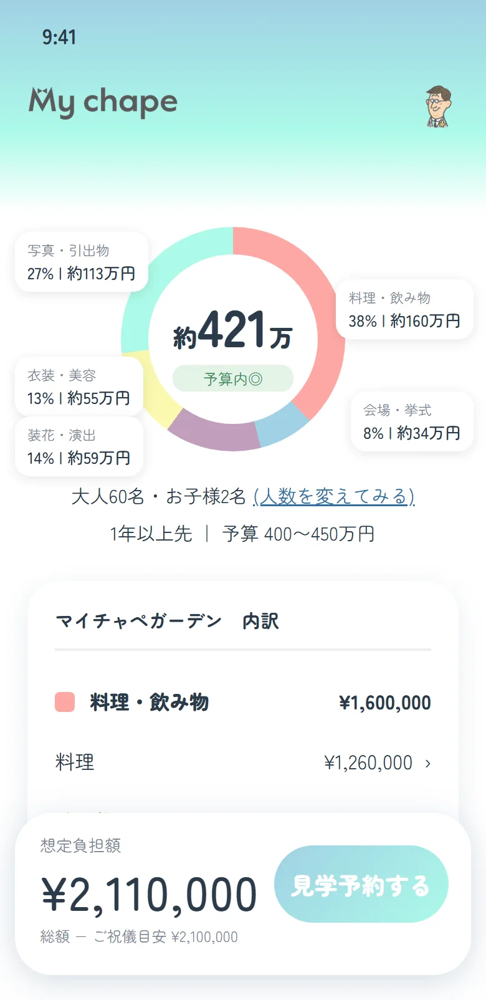
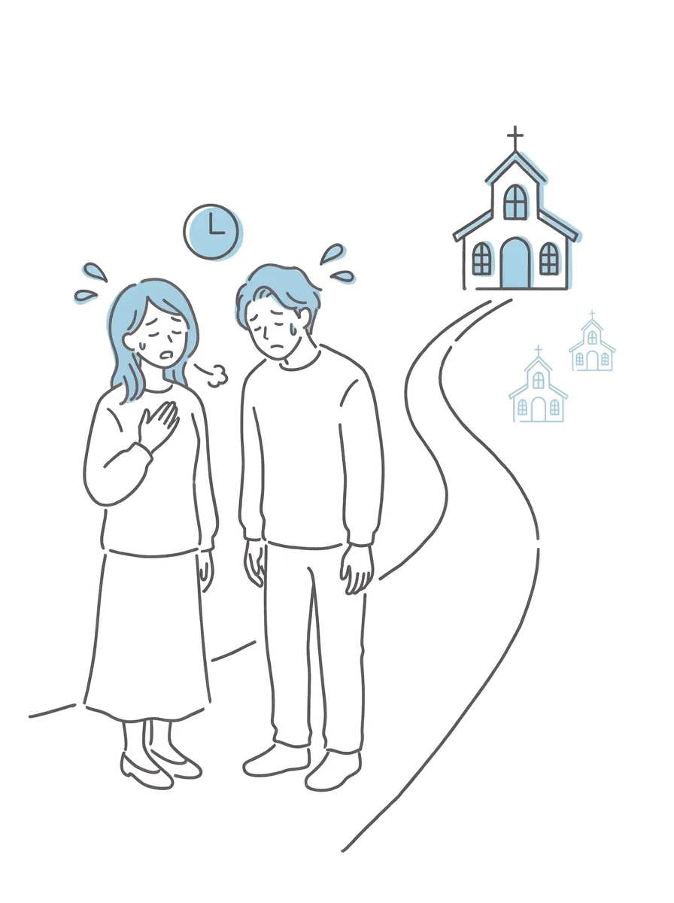

結婚式場を訪れた方々は、
こんな悩みを持っていました。
支払い金額が見積もりのときから
「上がった」と答えた割合。
出典: リクルート ブライダル総研「結婚マーケット調査2025」(結婚式を挙げた817人のうち、支払い金額が「上がった」と答えた394人の回答)
最初の見積もりから増えた
支払い金額の平均。
出典: リクルート ブライダル総研「結婚マーケット調査2025」(支払い金額が「上がった」と答えた人のうち、金額を回答した225人の回答)
式場を見学したカップルのうち、
最もモヤっとしたのが「見積もりの
妥当性」だったと回答した割合。
出典: ウエディングパーク「本音白書2026」
これから式場を探す方々は、
こんな悩みが…
式場に行く前に、
費用の
相場だけでも
知りたいな…

見学に時間を取られて、
ほかの式場まで回れなかった…
いろんな式場を、一目で比べられたらいいのにな…
見積もりより、
最終的な金額が
上がったらどうしよう…!?

マイチャペなら、皆さんのお悩み、解決できます!
マイチャペを使えば、
こんなことができます!
気になる式場を、地域から探せる!
お住まいの地域の式場や、
ご予算に合う式場が並びます。
式場名で検索もできます。
※現在は、北海道・東京・神奈川・千葉・埼玉・長野・静岡・愛知・京都・大阪・兵庫・福岡・沖縄の結婚式場を検索できます。

ブライダルフェアや公式プランなどの
情報が一目でわかる!
詳細画面に入ると、公式サイトや
プラン、ブライダルフェアに
関する情報を見ることができます。

気に入った式場は、
その場で見積もりを確認できる!
ハートをつけた式場は、条件を入れるだけで、概算の見積もりを内訳つきで確認できます。

使い方は、3ステップ!
- 1見積もりの条件を入れる
- 2式場を探して、ハートをつける
- 3概算の見積もりを見る
よくある質問
料金はかかりますか
アプリは無料で使えます。
どの地域の式場が見られますか
北海道・東京・神奈川・千葉・埼玉・長野・静岡・愛知・京都・大阪・兵庫・福岡・沖縄に対応しています(順次拡大中)。
表示される金額は、式場の
公式の
価格ですか
いいえ。過去の価格データをもとに、マイチャペが作った参考価格です。実際の金額は、式場にご確認ください。
結婚式の費用の平均や相場は、どのくらいですか
平均や相場は、人数・地域・式場の種類で大きく変わります。マイチャペでは、人数や予算を入れると、気になる式場の概算の見積もりが、内訳つきで出ます。
自己負担額は、どう計算しますか
自己負担額は、費用の総額から、ご祝儀や親からの援助を引いた金額です。マイチャペの見積もり結果には、ご祝儀の目安を引いた「想定負担額」も出ます。
ログインは必要ですか
はい。メールアドレスでログインします。